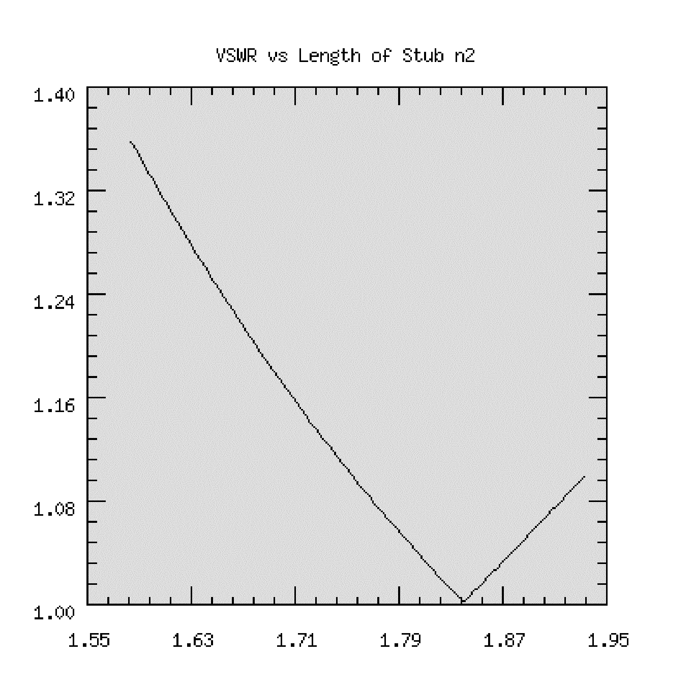

Copyright (c) 1989-2007 Silicon DSP Corporation Permission is granted to copy, distribute and/or modify this document under the terms of the GNU Free Documentation License, Version 1.2 or any later version published by the Free Software Foundation; with no Invariant Sections, no Front-Cover Texts, and no Back-Cover Texts. A copy of the license is included in the section entitled "GNU Free Documentation License".
TransNetCalc is provided with sample topologies and a database of transmission line types. The following is a description of how to setup topologies and the transmission line database. TransNetCalc is available stand alone and with an integrated TCL interpreter.
Refer to the README files with the distribution and the sample TCL scripts to run TransNetCalc.
For the description of TransNetCalc with Integrated TCL Interpreter follow this link.
Interpreter follow this link.
The transmission line network is described by a topology file. An example is given below:
node1 node2 node3
node2 node4
node3
node4
end
node1 transmissionLineType length
node2 transmissionLineType length
node3 transmissionLineType length 100 0
node4 transmissionLineType length open
A transmission line network is represented by a graph. The graph contains vertices or nodes and edges. The nodes hold information about the edges. Edges can be transmission lines or lumped elements. Nodes are either binary, such as node1 in the example, or they are unary such as node2 ( a cascade node) or they are loads.
Nodes node4 and node3 are loads. Therefore, load nodes contain, besides the transmission line type and length, information about the load. Only real loads or open circuits are allowed. For general loads see lumped elements below.
node3 is a 100 Ohm load. node4 is an open circuit (bridged tap). In the topology describing the graph, if a node is followed by two nodes it is a binary node ( node1). If it is followed by a single node ( node2 above) it is a cascade node. If no node follows the node name then the node is a load. The nodes node3 and node4 are loads. The source node is implied.
Note that the topology file consists of two distinct sections. The first section describes the node interconnection. The second section describes the node parameters such as transmission line type, lengths and load. All dimensions are in meters, including the length.
The transmission line types are specified in the file trans_types.dat. The following transmission lines are supported:
Also supported but not shown are any transmission line for which the R.L,C, and G parameters may be specified.
Many more transmission line types can be supported with more parameters. See the source code.
Also supported is the lumped element section shown below
Lumped Element Model
The transmission line types or lumped element values for each node are specified in the topology file following the node name.
The transmission line types are described in a data base in a file called trans_types.dat. This file is organized as follows:
name1 parameter1 parameter2 parameter3 parameter4
name2 parameter1 parameter2 parameter3 parameter4
name3 parameter1 parameter2 parameter3 parameter4
...
nameN parameter1 parameter2 parameter3 parameter4
The first component is the name of the transmission line. The name is formed as follows: The first few characters describe the transmission line type. The next characters in the name provide a distinct name for the transmission line with the specified parameters. For example,
coaxthin 0.001 0.005 2.25 0.001
coaxthick 0.002 0.01 2.25 0.001
specify two transmission lines of type coax. Their geometric parameters are different, however. One has a shield radius of 1 cm (coaxthick) while coaxthin has a shield radius of 0.5 cm. In this manner we can specify for example an ethernet thick and thin coax segment. All dimensions are in meters. The dielectric constant for both lines is 2.25.
For the supported transmission lines, the parameters are (refer to the figure above):
| Type | Name Formation | p1 | p2 | p3 | p4 |
|---|---|---|---|---|---|
| Coax | coaxName | ri |
rs |
er |
t |
| Parallel Conductors | paralName | ri |
d |
er |
0 |
| Balanced Shielded Line | balshName | ri |
rs |
er |
h |
| Wire Near Ground | wireabgName | ri |
h |
er |
0 |
| Default | name | r |
l |
c |
g |
In the above, in the column "Name Formation", the bold letters are mandatory. The Name changes to distinguish the same line type but with different parameters. The 0 in the fourth parameter for 2 and 3 is mandatory.
For the default, the 4 parameters describe the r, l, c and g parameters of any line. This is used for twisted pair or any other type of transmission line. In this case, the name is arbitrary. That is, no required letters are needed. However, the names cannot begin with the bold names for the supported transmission lines specified.
Lumped element parameters are specified in the topology file following the node name. That is, instead of specifying a transmission line type, the values for the lumped elements are specified. For example,
node1 R100_L0.001_C1e-12_G0.01 0
and
node1 r100_l0.001_c1e-12_g0.01 0
specify a lumped element with R= 100 Ohms, L = 1 mH, C= 1 pF, G = 0.01 MHOs. Note that you can use upper or lower case letters for R,L,C and G. If you omit an element its value is assumed to be zero. Thus,
node2 R100_G0.01 0
Specifies a voltage divider where L=0 and C = 0. The use of admittance for G is useful since G=0 implies an open circuit.
Note the zero following the lumped element value specification. This is mandatory indicating a length of 0 which is ignored.
A lumped element can be used as a load by following the node with an open circuit.
Hence,
n1 n2
n2
n1 R100 0
n2 C100e-12 0 open
specifies a network with series 100 Ohm resistor and a 100 pF capacitor for a load.
Normal incidence plane wave propagation through inhomogeneous media can be modeled. In this case, if we assume lossless transmission through a
medium with dielectric constant er and permeability mu, then the medium can be specified in the trans_types.dat file as follows:
name 0 mu er e0 0
where e0 is the permitivity of free space.
Essentially, we replace the RLCG parameters with their free space equivalents.
To model plasmas use the following specification:
palsmaName collision_frequency electron_density 0 0
The electron density is in electrons per cubic cm.
Example:
Consider the topology,
n1 n2
n2 n3
n3
end
n1 material1 1000
n2 plasmaTest 2000
n3 material2 500 377 0
and let the trans_types.dat file contain,
material1 0 1.257e-6 4*8.85e-12 0
material2 0 1.257e-6 1.3*8.85e-12 0
plasmaTest 0 10e10 0 0
Note that free space is indicated by a real matched termination of 377 Ohms at the "load" node n3.
Example of plane wave propagation

The following double stub tuner is described in:
[5] Robert Grover Brown, Robert A. Sharpe, William Lewis Hughes, Robert E. Post, Lines, Waves, and Antennas, Second Edition, Ronald Press Company, 1973 .
The double stub tuner matches the load to 50 Ohms. In modeling and simulating this network, we will use the coaxial transmission line. The transmission line parameters are for a 50 Ohm characteristic impedance. The network is matched at 10MHz. The wavelength is 20m.

The network is described in TransmissionLineTopCalc using the following topology ( stored in an ASCII file):
n1 n2 n3
n3 n4 n5
n2
n4
n5
end
n1 coax1 30
n2 coax1 1.76 0 0
n3 coax1 2.5
n4 coax1 6.6 0 0
n5 R100_L0.0000015915 0 open
Note that the lengths are in meters based on the 20m wavelength. The load at 10MHz, 100+j100 is modeled using lumped circuit parameters in node n5 : R100_L0.0000015915.
The transmission line type data base is, with coax1 defined:
#19m 0.053437723 5.530183e-7 5.157361e-11 1.031472e-9
The performance of the double stub tuner is shown in the figure below. The VSWR is plotted against the frequency (+- 10% of 10MHz).
This result was obtained using TransmissionLineTopCalc with integrated TCL which makes all calculations of the network including setting frequency and node parameters available through TCL commands.

The performance of the double stub tuner as a function of the variation of the stub length for node n2 is shown in the figure below. The result is calculated using TransmissionLineTopCalc and integrated TCL. The length is varied between +- 10% of the tuned length at 10MHz.
